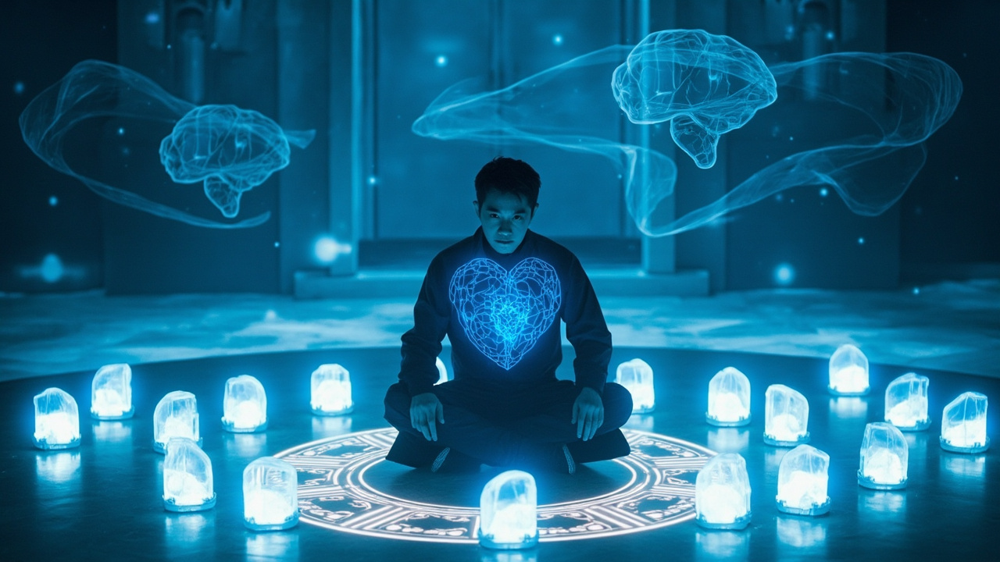
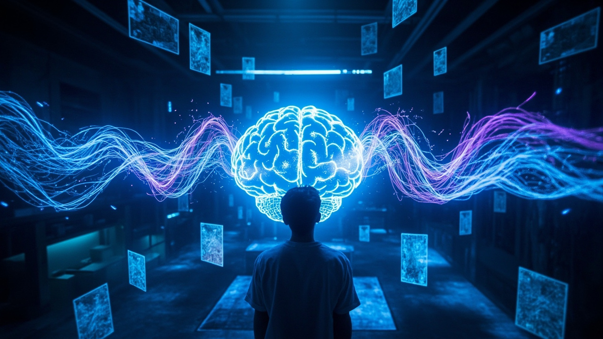
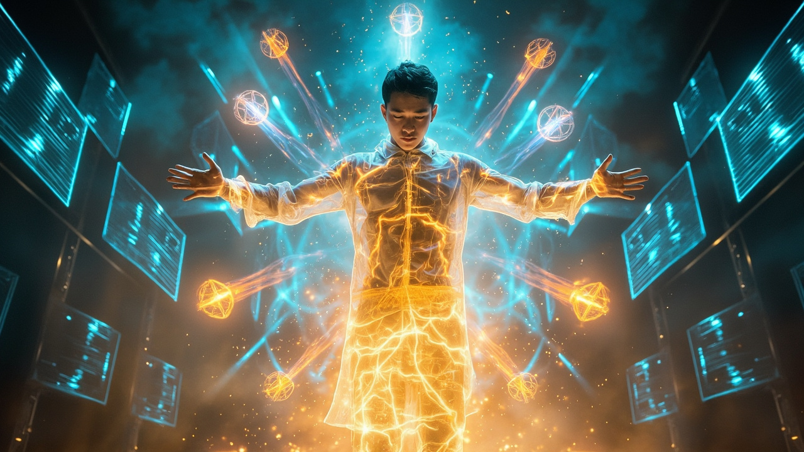
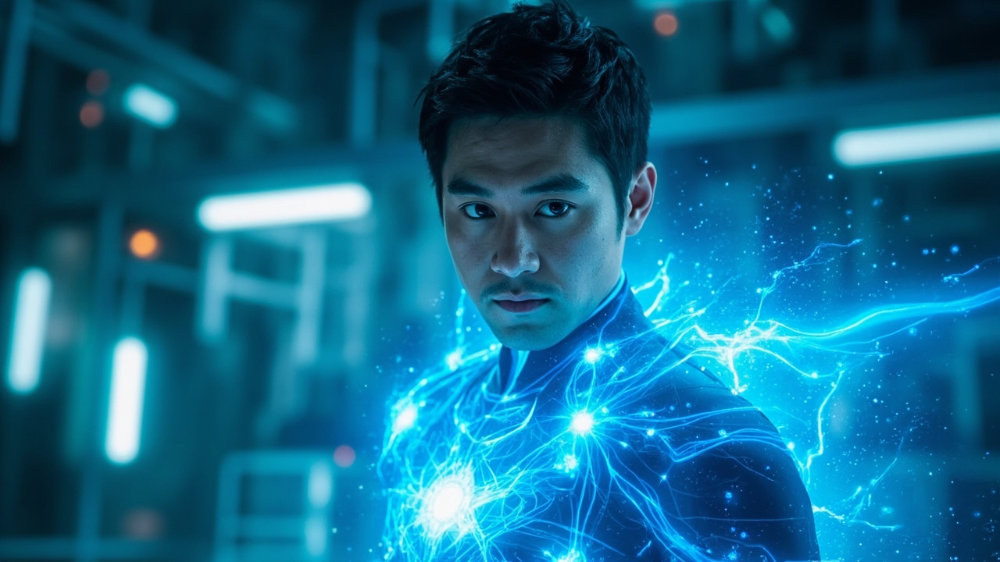

🎧 點擊播放有聲朗讀
林塵盤膝坐在實驗室中央的靈能矩陣中，四周懸浮著十二顆閃爍著幽藍光芒的靈芯晶體。空氣中瀰漫著電離靈氣的焦灼氣息，牆壁上全息投影顯示著他的腦波圖譜——那圖譜正在發生驚人的變化。靈芯系統警告：意識穩定性降至67%，建議立即終止融合程序。林塵咬緊牙關：「繼續。」

全息投影中，林塵的腦波圖譜開始分裂——左半邊是規律的科技藍（靈芯系統的數據流），右半邊是跳動的修真金（苦修二十載凝聚的元神）。兩者像兩條巨龍在腦海中撕咬，意識分裂度突破安全閾值，記憶區塊出現大規模損壞。林塵看到無數畫面同時湧現——這些記憶正在被重新編碼。
三天前林塵在廢墟深處發現的上古修真文明遺物——天機玉簡，此刻正與他的意識融合。玉簡中記載的並非傳統功法，而是一種將意識數據化的技術。金色光束連接玉簡與林塵額頭，古代修真智慧與現代量子計算技術在意識層面交匯，構成一個立體的融合矩陣。這不是簡單的融合，而是一場進化。

實驗室中的十二顆靈芯晶體同時爆發刺目光芒，高速旋轉在空中劃出複雜幾何軌跡，構成意識重構場。十二件寶物同時灌輸，修真功法與科技模組融合，生成全新技能樹。劇痛達到頂峰——林塵的意識像被打碎的鏡子散落成億萬碎片，然後按照某種深奧的規律重新組合。新意識從虛無中誕生。

林塵睜開眼睛，左眼能看到空氣中靈氣粒子的流動軌跡像七彩極光，右眼能解析這些粒子的量子態數據。他同時「感知」到三百米外兩名金丹中期修真者的存在、五公里外三台軍用無人機的狀態。融合完成！意識維度從1.0提升至4.7，解鎖能力：靈質計算、意識場操控、跨維感知。科技與修真在他的手中合而為一。